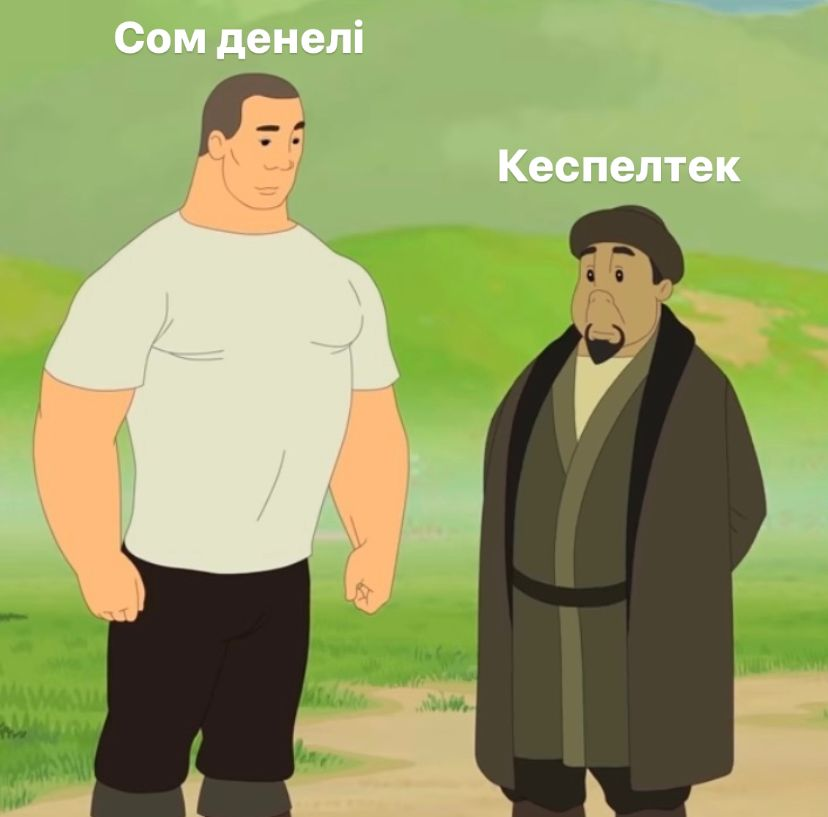

Кеспелтек (сын есім)

Лексикалық мағынасы: дене бітімі жуан, иықты, бірақ бойы аласа адам. ( тек адамға
ғана емес, белгілі бір заттарға да айтылады)
Синонимдік қатары: КЕСПЕЛТЕК-ТӨРТПАҚ-ЖУАНТЫҚ-БАҚАНАҚ
Қолданыс аясы: көркем әдебиетте көп қолданылады.
Қарсы алдында кеспелтек денелі біреу сүмсиіп тұр. Фонарын көтеріп, ананың
бас-аяғына тінте қарап еді танымады (І. Қожабаев, Қансонар ).
Контексттегі мағынасы:
Әбіш Кекілбаев "Автомобиль"
Зулап келеді. Сол баяғы көлденең сұлап жатып алған бір өң, бір кейіп кеспелтек
жалдар.
Бұлардың кіріп келе жатқанын құлағы шалып қалса керек, шүмекті шелектен кеспелтек
флягқа сүт қотарып тұрған қалпы жалт қарады да, жым қоя қойды ( А. Мұқатаев,
Директордың бір күні.).
Бауланған қурайдың жоғарғы жағында жатқан кеспелтек томарды жерге домалатып
түсірді де , бір бауын үйге қарай бүгежектейсүйрейжөнелді ( М . Сүндетов , Ескексіз . )
Бір-екі солдатты кеспелтек сойылмен доптай қағып қайта оралғанында , ұзын бойлы
қара бұжыр солдат орнынан ұшып тұрды да , мылтығын шапшаң кезеп Басықараның
дәл көкірек тұсынан дәлдеп атты ( І . Есенберлин , Қаһар ) .
Кеспелтек қаптар , енсіз екен-шелер , далиған дағарлар әділет таразысына тартылып ,
сақырлап қант , бұрқылдап ұн өтіп жатты (Б. Қыдырбекұлы , Ұры . ) .
Меден кейде ысқырып , кейде қайықтың ернесіне кеспелтек ағашпен тықылдатып
қояды ( С . Хайдаров , Теңіз самалы ) .
Мультимедилық тапсырмалар: